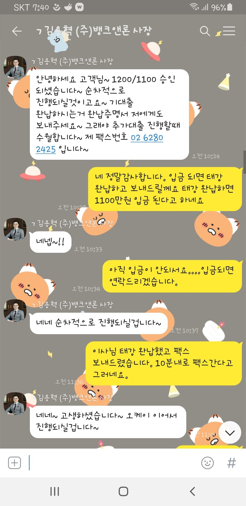
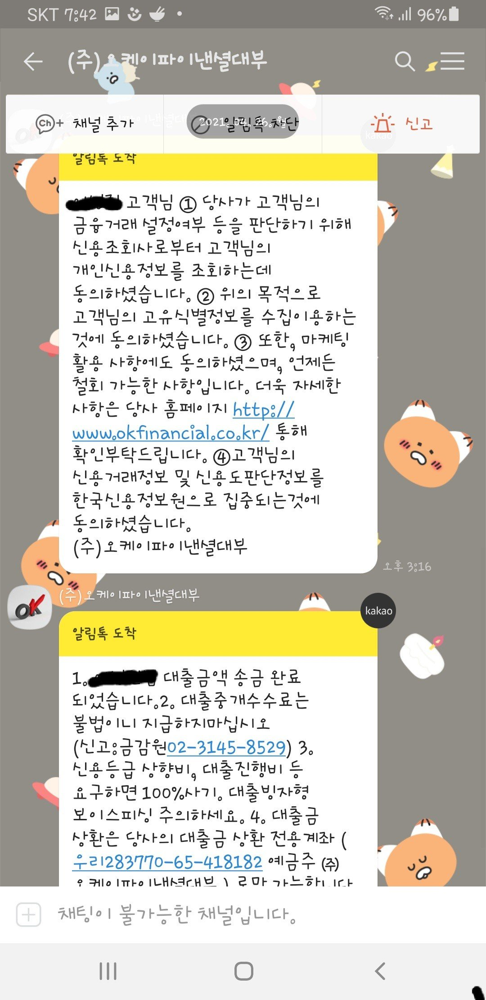
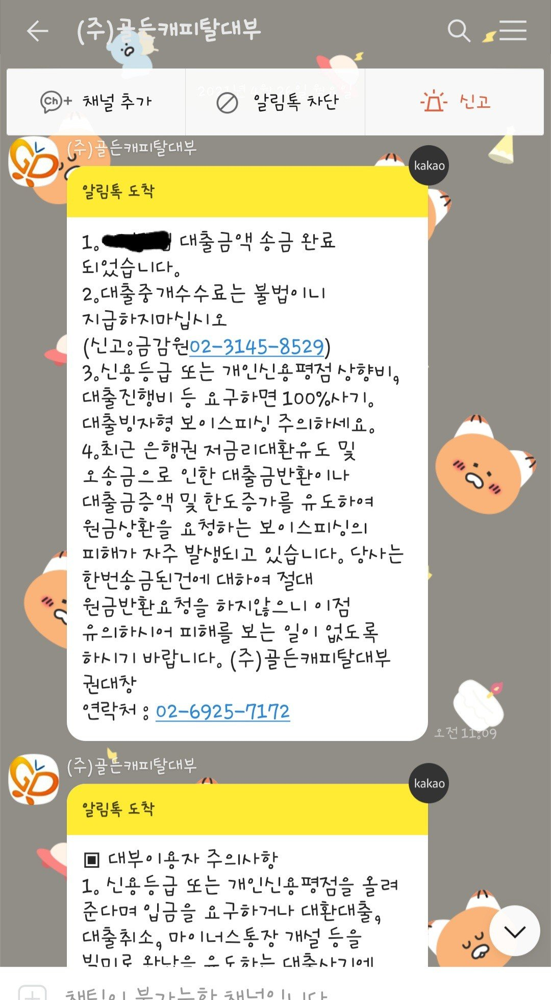

[개인회생자대출] 김용혁이사님 통해 대출성공 하였습니다.
4대보험가입 들어가는 직장인 개인회생 60회중 35회 납부중이고 기대출이 5개 정도 있었고 2200만 대출이 있었습니다.
저는 목적이 대환 목적이었어요.
미납은 없었지만 기대출도 많은 상태고 대출받은지도 2개월 밖에 되지 않아 대출안될거라고 생각했었는데 예전에 뱅크론에서 대출 받은적이 있어서 한번더 알아보게 되어 예전에 상담하신 김용혁 이사님이랑 다시 진행하게 되었습니다. 위에 내용과같이 기대출이 많아서 안될거라고 생각했지만 이사님은 긍정적으로 말씀 해주시고 힘을 돋구아 주시고 대출이 안될거라고 생각한 저를 안심 시켜줬습니다. 걱정하지 말라는 말과 좋습니다 라는 말을 반복해주셔서 그말이 너무 힘이 되었습니다.
대출을 늦게 진행해서 담날로 넘어갔지만 다행이도 진행한 2군데서 승인이 됐고 기대출 5군데중에서 2군데로 줄어들었고 남은돈이생겨 생활자금으로 쓸수있어서 넘 좋아요.
3개월후에 다시 저축은행으로 남은 기대출 두군데 대환해보자고 말씀도해주셨어요~
넘넘 감사드리고 고생하셧습니다.
3개월후에 다시 연락드리겠습니다.
정말 감사합니다.


